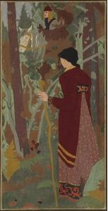
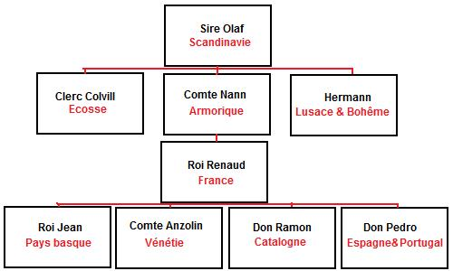
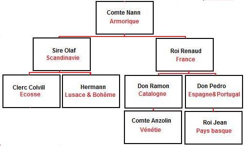
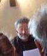
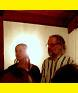
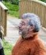

Sire Nann et la fée
Sir Nann and the Fairy
Dialecte de Léon
|
Puis dans le Barzhaz, 1ère édition, en 1839, sous le titre "Le seigneur Nann et la Korrigan. "Cette ballade m'a été apprise...par une paysanne cornouaillaise. Depuis lors, je l'ai entendue chanter plusieurs fois en Léon; ce dialecte étant plus élégant que celui de Cornouaille, j'ai cru devoir le suivre". (édit. 1867 p.25) " Clémence Penquerc'h , fille de la sœur de Fañche , Marie-Jeanne Droal, dite Mélan, épouse Penquerh de Penanros en Nizon], se souvient très bien de la Korrigane" (Camille de La Villemarqué à son cousin Pierre, le 21.11.1906 ). Selon la thèse de doctorat d'Yvon Le Roll, le 2ème carnet, p.136 bis, renferme une autre version, "An otrou Nan", qui donne son nom au héros du Barzhaz. C'est ce qu'on vérifie, depuis la publication en ligne des 3 carnets de Keransquer, si ce n'est que le carnet n°2 n'a été utilisé, pour ce que nous en savons, qu'à partir de 1840. Le titre "Aotrou Nann hag ar c'horrigan" de l'édition 1839, doit provenir d'un autre chant que ceux des carnets. Ceux du carnet N°1 désignent le héros uniquement par "An aotrou Kont", "Monsieur le Comte".. La version de la page 72 (numérotée 136 bis, par le fils de La Villemarqué), du second carnet tient en 4 lignes, dont le titre. Comme indiqué à la page bretonne du présent chant , ce texte très court corrobore l'interpétation de ce chant exposée ci-après et détaillée dans le livre "La Mort cachée" signalé sur la présente page. - Sous forme manuscrite: . on le trouve 10 fois (!) dans les manuscrits de Penguern : Tome 89 "Ar c'hont Tudor" (Taulé, 1850 publié dans "Gwerin 4); Tome 90, 285 "Ar c'hont Trador"(= sans titre, Taulé, 1851 et "Ar c'hont Tudor", (Henvic, 1851), publiés par "Dastum" pp. 181 et 184; Tome 91, 80 "à otrou a conte a et briet" (texte transmis par Pierre le Roux), "Ar Korandones" (écriture de Kerambrun) et "Markis ar c'hont" (= sans titre), publiés par "Dastum", en 1983, pp. 269, 270 et 345; Tome 92, 36 "An Otro komt" provenant de la collecte de Mme de Saint-Prix); Tome 93, 33 "Ar c'hont Tudor"; Tome 94, 22 "Ar c'hont ag ar gorrigan; Tome 95, 7 "Ar C'hont Tudor". . Une traduction manuscrite par Luzel, intitulée "Monsieur Nann" figure parmi les Nouvelles acquisitions françaises de la BN à Paris, département des manuscrits. - Sous forme de recueil: . La première publication de cette gwerz est dûe à Louis-Antoine Dufilhol (1791-1864) qui, sous le pseudonyme de Louis Kerardven, en fit paraître une version française avec le texte breton en appendice dans son roman "Guionvac'h", à Paris en 1835 . Le chant y était intitulé "Sonen Gertrud guet hi vam" (chanson de Gertrude et de sa mère). Ce n'est que dans l'édition du Barzhaz de 1867 que La Villemarqué La Villemarqué signale, dans les "Notes" annexées à Sire Nann (p.30), que Dufilhol l'avait déjà utilisée, "en l'appliquant à la fin tragique [du héros] Alain de la Sauldraye, poursuivant la biche de Sainte-Ninnoc'h". . Le volume 1 des "Gwerzioù Breiz Izel" de F-M. Luzel (1867) s'ouvre sur 3 versions de ce chant: "Ann aotro ar c'hont" (Plouaret, 1844); "Ann aotro Nann" (Plouaret, 1848); "Ann aotro ar c'hont (Duault). - Dans divers périodiques: . dans "Mélusine", IV en 1888 fut publié l'original manuscrit de Louis Dufilhol. . par Rolland (en traduction, dans "Romania" XII, "Monsieur le comte", 1883); . par Ernault ("Bugale 'r c'hont a Veselon", Plougonver et "Jobeik er c'homt", Trévérec) dans "Revue des Traditions populaires", 1899); . par Loth ("Otro er hont",Le Croisy), dans "Annales de Bretagne" XXVII, 1912); . par l'Abbé François Cadic ("Eutru er homt hag e vadam", Pontivy, 1890) publié dans "Paroisse bretonne de Paris" en mai 1907; . par Milin (1° "An aotroù Tregonk" et "Ar c'hountes Holl", 2° "Ar chont Dredol") dans "Gwerin I" La problématique liée à ce chant est exposée, sous une autre perspective et accompagnée d'un matériel sonore et iconographique admirables sur le site que Mme Cattia Salto consacre aux "Terres celtiques" : Cliquer ici |
 La Fée et le chevalier par Paul Sérusier Ton Arrangement MIDI par Chr. Souchon |
Then in "Barzhaz Breizh, 1st edition, 1839, titled "The lord Nann and the 'korrigan'". "I learnt this ballad from the singing of... a Cornouaille country girl. Since then, I heard it repeatedly in Léon; As the latter dialect sounds better than that of Cornouaille, I prefered to use it here". (édit. 1867 p.25) "Clémence Penquerc'h , daughter of Fañche's sister , Marie-Jeanne Droal, alias Mélan, wife of Penquerh from Penanros near Nizon], remembers very well the 'Korrigane'" (Camille de La Villemarqué to her cousin Pierre, le 21.11.1906 ). As stated in M. Yvon Le Roll's doctoral thesis, the 2nd notebook, p.136 bis, includes another version, "An otro Nan". We may assume that La Villemarqué found there the name of the hero in the Barzhaz ballad. This fact is confirmed, since the online publication of the 3 Keransquer notebooks, but since notebook n ° 2 was not in use, as far as we know, before 1840, the title "Aotrou Nann hag ar c'horrigan" in the 1839 edition of the Barzhaz must come from another version than those in the notebooks. Those in notebook N ° 1 refer to the hero only as "An aotrou Kont", "His Lordship, the Earl" The version on page 72 (numbered 136 bis, by La Villemarqué's son), of the second book has only 4 lines, including the title line. As indicated on the Breton page of the present song , this very short text corroborates the interpretation given below and detailed in the book "La Mort cachée" advertised on the present page. - In handwritten form: . It is found 10 times (!) in the de Penguern manuscripts: Tome 89 "Ar c'hont Tudor" (Taulé, 1850 published in "Gwerin 4); Tome 90, 285 "Ar c'hont Trador"(= untitled, Taulé, 1851 and "Ar c'hont Tudor", (Henvic, 1851), published by "Dastum" pp. 181 and 184; Tome 91, 80 "à otrou a conte a et briet" (text forwarded by Pierre le Roux), "Ar Korandones" (handwriting of Kerambrun) and "Markis ar c'hont" (= untitled), published by "Dastum", in 1983, pp. 269, 270 and 345; Tome 92, 36 "An Otro komt" from Mme de Saint-Prix' collection); Tome 93, 33 "Ar c'hont Tudor"; Tome 94, 22 "Ar c'hont ag ar gorrigan; Tome 95, 7 "Ar C'hont Tudor". . A handwritten translation by Luzel, titled "Monsieur Nann" is included in the "Nouvelles acquisitions françaises" of the French National Library, MS Department, Paris. - In song collections: . We are indebted for first publishing this "gwerz" to Louis-Antoine Dufilhol (1791-1864) who, under the nom-de-plume Louis Kerardven, printed a French version with the Breton original as an appendix to his novel "Guionvac'h", in Paris, in 1835 . The song was titled "Sonen Gertrud guet hi vam" (Song of Gertrud and her mother). It was not until the 1867 Barzhaz edition that La Villemarqué stated, in the notes appended to "Aotroù Nann" (p.30), that Dufilhol had already resorted to that song, "adapting it to [the protagonist] Alain de la Sauldraye's tragic death, who endeavoured to hunt down the doe of Saint-Ninnok". . The first Book of F.M. Luzel 's "Gwerzioù" opens with this song in 3 versions: "Ann aotro ar c'hont" (Plouaret, 1844); "Ann aotro Nann" (Plouaret, 1848); "Ann aotro ar c'hont (Duault). - In several periodicals: . the review "Mélusine", IV published in 1888 Louis Dufilhol's original MS. . by Rolland (in translation, in "Romania" XII, "Monsieur le comte", 1883); . by Ernault ("Bugale 'r c'hont a Veselon", Plougonver and "Jobeik er c'homt", Trévérec) in "Revue des Traditions populaires", 1899); . by Loth ("Otro er hont",Le Croisy), in "Annales de Bretagne" XXVII, 1912); . by Rev. François Cadic ("Eutru er homt hag e vadam", Pontivy, 1890) in "Paroisse bretonne de Paris", in May 1907; . by Milin (1° "An aotroù Tregonk" and "Ar c'hountes Holl", 2° "Ar chont Dredol") in "Gwerin I". The issues involved by this ballad are showcased, from another perspective and accompanied by admirable sound and iconographic material on the site that Ms. Cattia Salto dedicates to "Celtic Lands ": Click here . |
1. Sire Nann et sa femme étaient
1. Sir Nann and his wife were both young
La Mort cachée
présentés en version française
en
LIVRE DE POCHE

par Christian Souchon
The Concealed Death
presented in English
as a
PAPERBACK BOOK

By Christian Souchon
Cliquer sur le lien ou l'image - Click link or picture for more info
Français
English
De bien bonne heure fiancés.
Bien tôt ils furent séparés.
2. La dame hier eut des bessons;
- Voyez quel teint de neige ils ont:
Une fillette et un garçon."
3. - Que votre cœur désire-t-il,
Vous qui m'avez donné ce fils?
Dites! Vous l'aurez aujourd'hui:
4. Bécasse de l'étang ou chair
D'un de ces chevreuils du bois vert?
5. - La chair de chevreuil me plairait,
Mais au bois il vous faut aller. -
6. Sire Nann, entendant cela
A saisi sa lance de bois,
7. Sur son cheval noir a sauté
Pour gagner la verte forêt.
8. En arrivant au bord du bois,
Une biche blanche aperçoit.
9. A sa poursuite il s'est lancé,
Si vite que le sol tremblait.
10. Lui, de la suivre avec passion
Et l'eau ruisselle de son front
11. Et des flancs de son cheval noir.
Jusqu'à ce que tombe le soir.
12. Il voit près d'une eau la cabanne
Où vivait une korrigane.
13. Tout autour, de l'herbe fleurie.
Pour aller boire, il descendit.
14. Près de sa fontaine, la fée
Peignait ses longs cheveux dorés
15. Avec un beau peigne d'or fin
(Pauvres, ces dames ne sont point).
16. - Comment osez-vous, étourdi,
Venir troubler l'eau de mon puits?
17. Si vous ne m'épousez céans,
Vous languirez pendant sept ans
Ou dans trois jours serez mourant.
18. - Jamais ne vous épouserai:
Depuis un an je suis marié.
19. Ni ne languirai sept années,
Ni d'ici trois jours ne mourrai.
20. Dans trois jours je ne mourrai pas,
Mais le jour où Dieu le voudra.
21. J'aime mieux mourir à l'instant
Que m'allier aux korrigans.
22. - Bonne mère, si vous m'aimez,
Faites mon lit, s'il n'est point fait.
De moi le mal s'est emparé.
23. Pas un mot à ma chère femme,
Mais dans trois jours, je rendrai l'âme
Envoûté par la korrigane. -
24. Comme annoncé, trois jours après
La jeune femme demandait:
25. - Ma belle-mère, dites-moi
On entend les cloches. Pourquoi?
26. Et ces prêtres en surplis blanc
Pour qui font-ils monter leurs chants?
27. - Pour un pauvre qui cette nuit
Est mort. Nous l'avions accueilli.
28. - Ma belle-mère, dites-moi
Pourquoi Sire Nann n'est pas là!
29. - Il a fallu qu'il aille en ville.
Bientôt il sera là, ma fille.
30. - Pour l'église, que vaut-il mieux
La robe rouge ou bien la bleue?
31. - Mon enfant, la mode est venue
Qu'on aille tout de noir vêtue. -
32. Or, au cimetière elle vit
La tombe de son cher mari.
33. - Qui de notre famille est mort?
La terre est meuble et fraîche encor?
34. - C'est, ma fille, il me faut l'avouer:
Votre époux qu'on vient d'inhumer! -
35. Sur les genoux elle est tombée,
Pour ne jamais se relever.
36. Mais, merveilleux signe d'espoir,
Quand on l'eut enterrée, le soir,
Dans la même tombe, on put voir
37. Deux chênes surgis du tombeau
Dans le ciel unir leurs rameaux.
38. Ainsi que deux colombes blanches
Alertes et gaies sur leurs branches.
39. Saluer l'aurore et, toutes deux,
Prendre leur envol vers les cieux.
Traduction: Christian Souchon (c) 2008
En
gras
: passages étrangers aux versions authentiques de la gwerz.
When they entered the marriage bond.
They were parted by death early.
2. - The young lady has born you twins
A boy, a girl with snow white skin.
Now, this news should make you happy! -
3. - Say, for the great thing you have done,
Dear wife, in giving me a son,
What shall be the reward you won?
4. Flesh of snipe, from the pond below,
Or from the green wood, flesh of roe?
5. - Some flesh of roe I rather would...
No, I won't send you to the wood. -
6. Sir Nann, as soon as he heard it,
Stood up and his oak shaft he seized.
7. Quickly he mounted his black horse.
Trotted to the wood through the gorse.
8. At the edge of the wood he gazed
And perceived a white doe that grazed.
9. Sir Nann's steed ran in the morning
So fast that the earth was trembling.
10. The doe took flight. Sir Nann gave chase
And his forehead beaded with sweat.
11. So did the flanks of his black horse.
At sunset he stopped perforce
12. By a small brook upon whose bank
Was the house of a korrigan.
13. There was a smooth lawn all over.
He dismounted to drink water.
14. The korrigan sat near her lair,
And was combing her long fair hair.
15. And she did it with a gold comb
(Rich girls need gold to feel at home!)
16. - It is very thoughtless of you
To stir my water as you do!
17. Either you marry me today,
Or sick for seven years you stay,
Or in three days you'll pass away.
18. - I won't marry you, anyhow!
I've been married for one year now;
19. To lay sick I do not intend.
Why should my life in three days end?
20. You wished that in three days I died?
I'll die the day God shall decide.
21. I rather would die right now than
Be married to a korrigan!
22. - My mother, who loves me dearly,
Order that my bed be ready.
I am oppressed with malady.
23. Don't tell my spouse! I need your aid.
In three days in earth to be laid.
That's what a fairy's spell has made.
-
24. And really three days later
The girl asked her husband's mother.
25. - Please, tell me, my mother-in-law,
For whom is the bell tolling low?
26. For whom are these priests gathering,
Clad in white, and why do they sing?
27. - They sing for a poor man who died.
We had put him up overnight.
28. - Another thing I'd like to know:
Where is Sir Nann, mother-in-law?
29. - My dear daughter, he's gone to town.
He will be back in a short time.
30. - Shall I, my dear mother-in-law,
Clad in red or blue, to church go?
31. - The latest fashion, dear, exacts
That you should go to church in black. -
32. She strode over the churchyard sill
And spied her husband's grave, downhill.
33. - Someone died in our family,
Since the earth was dug recently!
34. - I can no more conceal, my dear,
Alas, that your husband is here! -
35. The wife overcome by the pain.
Fell down, never to rise again.
36. A wonder happened overnight:
They had laid the wife to the side
Of her husband in the same grave.
37. The next morning two oaks had shot
From the grave and twined at the top
38. Their branches where two white doves perched
And sang a duet full of mirth!
39. Greeting with their song the new day,
Into the sky they flew away.
Transl. Chr. Souchon (c) 2008
Passages in
bold characters
: not found in truly traditional versions of the gwerz.
Cliquer ici pour lire les textes bretons.
For Breton texts, click here.

|
Les commentaires de La Villemarqué
- Ils visent d'abord à souligner les aspects proprement bretons de cette histoire de mort d'un homme cachée à une épouse. Dès la première édition, les notes mentionnaient la présence de strophes composées de trois vers qui seraient, selon le Barde, un emprunt aux anciens poètes gallois et donc un gage d'antiquité. Ce n'est qu'en 1867, qu'il complète cette remarque pour souligner l'absence de cette forme dans "la rédaction vannetaise de [sa] pièce par L. Dufilhol ", dont la publication remontait pourtant à 1835! - Mais l'auteur consacre l'essentiel de ses commentaires aux chants populaires en d'autres langues qui sont en rapport avec le chant breton. On peut ne pas être convaincu par cette démonstration d'antériorité, mais non pas nier l'étroite parenté des deux textes. Une légende très ancienne Ces références montrent la permanence et l'ubiquité, dans les contes populaires, de certains thèmes (dont certains, toutefois, sont interpolés dans son poème par la Villemarqué, comme on le verra): - la forêt comme lieu magique; - le lieu interdit gardé par un être surnaturel; - sanction de la transgression: être uni au génie tutélaire ou détruit par lui; - le choix offert au héros entre une mort rapide et une longue décrépitude; - l'union des époux ou des amants après la mort... - une conception très masculine de la femme idéale qui ne compte pour rien à la naissance, se définit en tant que mère ou épouse et suit son mari dans la mort. - le stratagème de la mort cachée à la jeune mère, présent dans toutes les versions, est, cependant, imaginé par le noble mourant pour ménager la fragile jeune mère le temps nécessaire pour qu'elle allaite le fils nouveau-né qui assurera la pérennité de son lignage. Sa belle-mère est chargée d'y veiller. Cela apparaît clairement dans la version recueillie par Mme de Saint-Prix, qu'elle intitule "Ar comte yauanc":
Dans la plupart des versions de la gwerz armoricaine il est remplacé par le délai de quarante jours qui sépare la naissance d'un garçon et la messe de relevailles . Autant de "dogmes" étrangers à la foi chrétienne et qui conduisent à penser, comme le fait La Villemarqué et en dépit des railleries de ses détracteurs, que l'on est bien en présence d' un de ces anciens lais dont Marie de France dit que les Bretons, "Fere les lais pour remembrance, Qu'on nes meist en ubliance" (Equitan 1-8) Même remarque concernant la gwerz "Yannik Skolan". Légende populaire et thème littéraire Le thème de ce conte populaire est simple: un noble humain est puni pour avoir dédaigné ou pour s'être uni à un être surnaturel qu'il a ensuite trahi, soit parce qu'il s'est remarié, soit parce qu'il a enfreint une interdiction qui s'apparente à un tabou. Son succès vient sans doute du fait qu'il a été souvent réactivé par des œuvres littéraires. Plusieurs d'entre elles avaient pour but de légitimer le statut exceptionnel de certaines familles nobles en leur attribuant ce type d'origine surnaturelle . Un écho de cette conception se trouve peut-être dans les chants bretons qui font du héros un comte dont on parle avec grande déférence malgré son jeune âge et que la fée, symbole du pouvoir dans les contes celtiques, connaissait avant même de le rencontrer. Généalogie des chants de la "mort cachée" selon G. Doncieux A côté des ballades nordique (le chevalier Olaf) et bretonne (le Comte Nann) caractérisées par l'intrusion du féérique dans le prologue, on trouve donc en France une chanson plus "rationnelle": "le roi Renaud". On sait aujourd'hui que le nombre de versions de ce chant recueillies entre 1839 et 1900, en France et dans le monde, est bien plus élevé que ne l'imaginait La Villemarqué. Dans son "Romancero populaire de la France", George Doncieux (1856 - 1903) recense 59 versions françaises (oïl et oc) et huit piémontaises (relevées par deux collecteurs) du "Roi Renaud". Elles se chantent sur 26 mélodies au moins auxquelles il faut ajouter une chanson basque (notée par Ch. Bordes) et les mélodies de la chanson bretonne sur le même sujet. La plupart des mélodies sont de même rythme, de même forme et de même tonalité (1er ton du plain-chant). Trois seulement sont dans le mode majeur. Doncieux évoque également une chanson basque , une canzone vénitienne , une chanson catalane et un "romance" espagnol dont les héros ont ordinairement pour noms, "le roi Jean", "le comte Anzolin", "Dom Ramon" et "Don Pedro". L'examen montre qu' En revanche, les versions tchèques et wendes (peuples slaves de Lusace), qui font de la mort du fiancé, Hermann, la conséquence d'une malédiction appelée sur lui par sa propre mère, constituent une catégorie bien distincte. Reprenant les analyses faites par Grundtvig (dans "Elveskud, dansk, svensk, norsk, faerosk, islandisk, skotsk, vendìsk, boemisk, tysk, fransk, italiensk, katalonsk, spansk, bretonsk Folkevise, i overblick", Copenhague, 1881) et Child, Doncieux propose la filiation suivante: Le tableau ci-dessous résume la thèse de Doncieux. En cliquant sur les différentes cases, on ouvre les pages consacrées aux chants cités. Le nom du héros On notera que le mérite d'avoir publié le premier, outre la version bretonne dès 1837 (cf. synopsis ci-dessus), trois strophes de la version française du "Roi Renaud", dans son "Barzhaz, revient au jeune La Villemarqué (âgé de 25 ans en 1839) et que ce n'est qu'en 1842 que Gérard de Nerval la publia dans la revue "La Sylphide". Doncieux note que, dans les versions françaises, le héros est désigné généralement sous le nom de Renaud ou sous des formes équivalentes. Parmi celles-ci, il cite le nom "Redor" qui rappelle les curieux "Trador" et "Tudor" que porte le malheureux comte dans cinq des versions bretonnes notées par de Penguern . Une interprétation ingénieuse de ce nom m'a été fournie par un correspondant, M. Padrig Kobis, à propos d'une version de ce chant recueillie à Pont-Croix, près d'Audierne, intitulée "Kont Riodor" . Il conviendrait de lire non pas "Kont Tudor" ou "Kont Trador", mais "Kont Rudor" ou "Kont Rador". Ce dernier mot serait à rapprocher du prototype germanique de l'allemand "Reiter" , le cavalier ou "Ritter", le chevalier. L'intuition qu'a eue La Villemarqué d'une origine nordique du chant (peut-être par "rétro-influence", le lai breton ayant été importé en Norvège à l'origine) serait alors confirmée. Cette même version met nettement en lumière le conflit entre deux conceptions du mariage: "conjugal" (qui privilègie l'amour entre époux) et "dynastique" (qui vise à la sauvegarde du lignage), une problématique redevenue d'une brûlante actualité! Doncieux conclut sa longue étude dans le même sens: L'inceste dans la gwerz bretonne Comme on le verra dans l'encart qui clôt cette page, M. Padrig Kobis assigne à l'archétype de ce chant une très haute antiquité qui justifie qu'on puisse soupçonner d'inceste les protagonistes, pour des raisons qui relèvent de l'histoire des mentalités. Dans le 1er chant noté par La Villemarqué , p. 24 de son premier carnet d'enquête, on lit:
Pour obtenir cette traduction, qui est celle de Donatien Laurent, on a remplacé les "en-deus" (=il a) du texte original par les "o-deus" (=ils ont), imprimés en gras. On comprend que la comtesse avait accouché de jumeaux à l'âge de 14 ans, que son époux avait alors 15 ans, mais qu' auparavant elle avait déjà eu un enfant mort-né dont le Barzhaz (et les autres versions) ne parlent pas. Si l' on considère qu' "en-deus" n' est pas une erreur de transcription, on peut comprendre que le comte de la première ligne est le père des deux protagonistes et que ceux-ci ont eu un enfant ensemble. Ce scandale pourrait être la cause de la séparation des deux parents évoquée au 2ème vers!: "M. le Comte de son épouse bien tôt s'est séparé. Il a eu deux beaux enfants. L' un ayant 15 ans, l' autre 14, ceux-ci en ont eu un "à leur tour" (= unan c'hoazh)". Cette interprétation se trouverait corroborée par le fait qu'une des deux versions collectées par Ernault, dont l'honnêteté et le sérieux ne font aucun doute, peut se comprendre, à la rigueur, de la même façon:
Le "jeune comte" dont-il est question à partir du 8ème vers est-il le frère de la jeune mère (et le père de son enfant), un époux de complaisance, ou un époux "normal", vrai père de l'enfant? La Villemarqué s'est-il autocensuré? En 1839 son ouvrage aurait-il été mis à l'index? Le 20 juin 1870 on donnait à Munich la première de la Walkyrie de Wagner. Le premier acte se termine par un duo d'amour sublime entre deux jumeaux, Siegmund et Sieglinde, enfants de Wotan (Welse): "Braut und Schwester/ Bist du dem Bruder:/ So blühe denn, Wälsungenblut" (Viens, épouse et sœur/ de ton frère:/ donne un héritier à Welse!) Les limites de la théorie de Doncieux Le folkloriste Diego Catalan fait une analyse dont il ressort que la généalogie de Doncieux, qui s'inspire du médiéviste et philologue Gaston Paris (1839 - 1903), fondateur de la revue "Romania" ne rend pas compte complètement de la complexité des relations qu'on peut déceler entre toutes ces versions. Gaston Paris s'efforçait d'assigner à chaque œuvre de la littérature orale, comme il l'aurait fait pour une œuvre écrite, une date de composition, un nom d'auteur, une version critique de référence, des sources d'inspiration précises... En l'occurrence, cette vision linéaire est insuffisante: Si bien qu'on peut légitimement penser que la vision de La Villemarqué, partagée par Grundtvig (antériorité de la gwerz) était correcte, surtout si l'on suppose que ce chant était l'un des lais "composés en Bretagne du Sud" dont on sait que le roi Hakon Hakonson (1217-1273) les fit traduire du français en norois pour composer le "Lioda Bok" norvégien, comme l'indiquait l'historien L.Fleuriot en 1987. Pour être complet, il convient d'indiquer ici que l'auteur britannique R.C.A. Prior (dans "Ancient Danish Balladds", tome I, 1860) voyait l'origine des "vises" scandinaves au 13ème siècle, à la cour des rois normands d'Angleterre et à celle du roi de France . Cette théorie est exposée à propos du chant "Herrman et Christine" . La comparaison des versions Luzel et La Villemarqué Il est intéressant de comparer ce chant avec la version recueillie par Luzel, également sous le titre Cette version "Luzel" est instructive par plus d'un aspect. On y évoque, par exemple, cette étonnante pratique de la messe de 'relevailles', appelée aussi "amessement" ou "remessiage" ou comme ici "purification" , où la mère se rendait avec le bébé, en principe le 40ème jour suivant la naissance d'un garçon et le 80ème jour suivant celle d'une fille et où elle était élevée par l'église et la communauté à son statut de mère ou confirmée dans son rôle de génitrice. Le rituel exigeait que le prêtre aille chercher hors de l'église la femme agenouillée sur le seuil et tenant à la main un cierge allumé. Une fête était donnée à cette occasion. Ces prescriptions étaient déduites d'un livre de la Bible, le Lévitique (chapitre 12). On commémore la Purification de la Vierge, le 2 février, sous le nom de Chandeleur, 40 jours après Noël. Par ailleurs, on remarque que les dialogues entre le comte et sa mère et entre celle-ci et sa bru, ainsi que la fin abrupte de l'histoire avec la remise des clefs, se retrouvent à l'identique dans le chant français Le Roi Renaud . La version de La Villemarqué , est-elle moins authentique parce que le mot "fuzuilh" ("fusil", mot utilisé dans le sens d"'arme" à partir de 1630) y est remplacé par "goaf" et qu'elle est expurgée de tous mots français ('chaseal', 'kont', 'rankontr', 'promptamant', "akord", "kotillon", etc.)? Elle évite, en tout cas, les lourdes redites qui entachent la version Luzel et elle est tellement plus équilibrée, plus élégante et plus poétique, avec sa touchante conclusion! Même si une partie de ces mérites revenait à des modifications opérées par La Villemarqué, ne faudrait-il pas saluer en lui un remarquable poète? Par ailleurs, Luzel a noté, dans les "Gwerzioù", tome I, deux autres versions de ce chant sous le titre "Ann Aotro 'r C'hont", (Monsieur le Comte), beaucoup plus proches du "Roi Renaud" que ne l'est "Sire Nann" et pour lesquelles Duhamel a recueilli 3 mélodies, (ainsi qu'une 4ème, entendue à Port-Blanc, qui accompagne, sur le présent site, "An Aotro Nann" déjà cité): . Une version vannetaise de cette ballade est donnée par l'Abbé François Cadic. Elle se distingue des autres versions en ce que l'être surnaturel rencontré ne cherche pas à venger un quelconque outrage: c'est une colombe douée de parole, qui donne au héros, elle aussi, le choix entre une mort lente et pénible et une mort foudroyante. L'analyse de Francis Gourvil Francis Gourvil dans son "La Villemarqué", pp. 414-415, commence par ironiser sur les "longues flèches" ("Revue de Paris", mai 1837), puis sur la "lance de chêne" que le Barde de Nizon a substituées au "fusil" des versions populaires (quand celles-ci ne parlent pas de "trompe d'argent" ou de "lévriers") et sur le fait que l'auteur a eu l'audace dans la Préface de 1867 d'insister sur ce fait pour "démontrer" l'ancienneté du chant: Il souligne également que l'on cherche en vain dans les versions authentiquement populaires certains épisodes: Gourvil conclut: "Il est hors de doute que La Villemarqué a... recueilli...une version aussi "brute" que toutes celles existant ailleurs et qu'il lui a donné un cachet d'antiquité en y introduisant quelques traits à son goût..." . L'examen des 3 fragments du manuscrit de Keransquer déchiffrés par Donatien Laurent confirme cette analyse, sauf sur un point: 'les flèches", puis "la lance" -traduite par "goaf"- de la strophe 6, loin d'être une supercherie, cherchent à rendre le mot "gwalenn" qui signifie "gaule" ou "perche" dans le manuscrit de Keransquer ("Hag e walenn e gemeras", p.25, ligne 6-2)! Une étonnante mansuétude Ceci dit, on peut trouver que F. Gourvil fait preuve d'une étonnante mansuétude lorsqu'il écrit (p.413): "La Villemarqué n'a pas eu à apporter de changements fondamentaux [aux versions] qu'il a pu découvrir". Or la strophe 16, sans doute inspirée par la "pesma" serbe de "Marko et la vila", où la fée reproche à Nann d'avoir troublé l'eau de son puits, est étrangère à la version bretonne et en occulte complètement le sens. Dans le poème du Barzhaz, c'est cette transgression qui motive le châtiment. Il en va tout autrement des authentiques versions populaires: Ces faits mystérieux qui, comme dans le cas du "Clerc Colvill", suggèrent l'existence de liens antérieurs réciproques entre le Comte et la fée, ont peut-être à voir avec l' allégorie féminine du pouvoir en honneur chez les Celtes (et, peut-être, les anciens Romains: Numa Pompilius et la nymphe Egérie) ou avec des archétypes enfouis dans la mémoire collective des héritiers d'une société originellement matriarchale. En tout cas, même s'ils sont malaisés à interpréter, on peut difficilement excuser La Villemarqué de les avoir remplacés par cette eau troublée qui n'a que faire dans la gwerz bretonne et est propre à égarer la rélexion: C'est ainsi que Diego Catalàn, analysant un "romance" espagnol ("Estaba Doña Ana") où cet élément existe vraiment, le rapproche de la gwerz modifiée, mais il l'ignore, par la Villemarqué: "Dans cette gwerz, Nann, s'en va dans la forêt où il poursuit un chevreuil jusqu'à un ruisseau, ce cours d'eau est la limite entre le monde des hommes et l'autre-monde, celui des êtres surnaturels, et [...] la transgression commise par le chasseur, son intrusion dans cet autre monde, n'est pas seulement pressentie, comme c'est le cas dans le "romance", mais elle est explicitement dénoncée par qui de droit: une elfe." Le folkloriste espagnol écrit ces lignes dans le cadre de considérations sur le "conservatisme des périphéries". Ce faisant, il témoigne à La Villemarqué une confiance bien imméritée! |
La Villemarqué's comments
- They first aim at highlighting the truly Breton character of this story where a husband's death is concealed to his wife: The first 1839 edition already mentioned three line stanzas in the ballad, a form that was allegedly borrowed from the Welsh poets of old and therefore a proof of antiquity. It was not until 1867, that he prolonged this remark to the effect that these tercets were missing in the "Vannes dialect counterpart to [his] piece published by L. Dufilhol ", whereby he omitted to specify: "as early as 1835!" But the bulk of the comments revolves around the relationship of the Breton ballad to folk songs in other languages . Even if this "proof" of anteriority is not definitely convincing, there is no doubt that both songs are closely related. A very old tale These various references show that folk tales contain elements that are permanent and ubiquitous (though some of them were artificially inserted into his poem by la Villemarqué, as we shall see later): - the forest as a magic place; - the sanctuary guarded by a supernatural being; - the punishment for trespassing is either being united to the tutelary spirit or being destroyed by him; - the hero being allowed to choose between immediate death and long and weary decrepitude; - union of lovers, or husband and wife, beyond death... - a macho conception of the ideal woman: she doesn't count as a baby and starts her real existence as a mother or a wife; but then she is bound to follow her husband in death. - the stratagem, devised by the dying nobleman, consisting in concealing her husband's death to the young mother, a feature common to all versions. It aims to make sure that the mother will breastfeed the baby son long enough to perpetuate the hero's lineage. The latter's mother will see to it. This appears clearly in the version collected by Mme de Saint-Prix, which she titled "Ar comte yauanc":
In most Lower Brittany versions of the song it is reduced to the fortieth day after giving birth to a boy, when the churching service was held. So many "dogmas" you would look for in vain in a Christian catechism! The inference is that La Villemarqué is right, and his detractors are wrong to deny it, when he asserts that this is one of those ancient lays of which the Bretons, according to Marie de France: "Fere les lais pour remembrance, (made their lays to be learnt by heart) Qu'on nes meist en ubliance"(lest they should be forgotten) (Equitan 1-8). This also applies to the gwerz "Yannik Skolan". Folktale and literary motif The plot of this folktale is easily summed up: a mortal is punished for having disregarded, or for having paired with a supernatural being whom he betrayed afterward, in either marrying again or infringing a prohibition akin to a taboo. Its popularity surely arises from its being often resorted to in literary works. Many of them were written to legitimate the outstanding position enjoyed by some noble families by ascribing them that kind of supernatural origin . This conception might be echoed by the Breton ballads making of the protagonist a Count, always mentioned with due deference in spite of his young age, with whom the Fairy, as a customary symbol of power in Celtic tales, was acquainted even before she encountered him. Genealogy of the "Concealed death" songs Beside the Nordic ballad of Knight Olav and the Breton gwerz of Count Nann featuring a supernatural episode as a prologue, there is in France a more "rational" ditty: the "song of King Renaud". The amount of versions of that song collected between 1839 and 1900 in France and abroad is far bigger than La Villemarqué fancied. In his "Romancero populaire de la France", George Doncieux (1856 - 1903) listed 59 French versions (in both Oïl and Oc dialects) and eight Subalpine (Piedmontese) versions (gathered by two collectors) of "King Renaud". They use as vehicles 26 tunes at least to which should be added a Basque song (noted by Ch. Bordes) and the tunes to the Breton gwerz. Most of these melodies are similar in rhythm, structure and key ("protus authentus" of plainchant). Only three of them are in the major mode. Doncieux also mentions a Basque song , a Venetian canzone, a Catalan ditty and a Spanish romance whose protagonists are usually named respectively, "King Jean", "Count Anzolin", "Dom Ramon" and "Don Pedro". When closely examined, they prove to be Quite different are the Czech and Wendish versions (Wends or Sorbs are Slavic minorities of Upper and Lower Lusatia) which make of Hermann the fiancé's death the consequence of a curse called upon him by his own mother. Based on the surveys made by Grundtvig (in "Elveskud, dansk, svensk, norsk, faerosk, islandisk, skotsk, vendìsk, boemisk, tysk, fransk, italiensk, katalonsk, spansk, bretonsk Folkevise, i overblick", Copenhagen, 1881) and Child, Doncieux assumes the following relationship: The table below sums up Doncieux' views. Click the individual boxes, to open the pages dedicated to the songs quoted. The name of the hero Be it noticed that it is young La Villemarqué's (he was 25 in 1839) great merit to have first published in his "Barzhaz", beside the Breton version, as early as 1837 (see synopsis above), three stanzas of a French variant to the same song, titled "King Renaud" and that it was not until 1842 that Gérard de Nerval published it in the periodical "La Sylphide". Doncieux states that, in the French versions, the hero is usually named Renaud or is known under similar names. Among them he quotes the name " Redor " that reminds us of the curious name "Trador" and "Tudor" by which the unfortunate Count goes in five of the Breton versions collected by Penguern . A clever elucidation of this name was provided by a fine contributor, M. Padrig Kobis, who has collected at Pont-Croix, near Audierne, a version of this ballad titled Kotriodor : instead of "Kont Tudor" or "Kont Trador" we should read "Kont Rudor" or "Kont Rador". The latter name should be paralleled with the prototype of German "Reiter" (rider) or "Ritter" (knight, chevalier). This would corroborate La Villemarqué's intuition who supposed a Nordic origin for this song (maybe after "return journeys" to and fro between Brittany and Scandinavia). The same version clearly highlights the conflict between two conceptions of marriage: "conjugal" (giving the foremost place to love between the married people), and "dynastic" (aiming to perpetuate a lineage), a question that was recently the burning topic of the hour in France! Doncieux concludes his long survey in the same way: Incest in the Breton lament As stated in the below insert concluding the present page, M. Padrig Kobis claims so great antiquity for the archetype of the songs at hand that he suspects incestuous intercourse between the protagonists for reasons pertaining to ancient mentalities. The 1st song recorded by La Villemarqué , on page 24 of his first copybook reads as follows:
To get this translation, which is Donatien Laurent's, the three occurrences of "en-deus" (=he has) in the original text were replaced with "o-deus" (=they have), in bold characters. We understand that the Countess had given birth to twins when she was but 14, that her husband was 15 by then, but that, previously, she had borne him another stillborn child, ignored in the Barzhaz (and the other versions). But if we consider that "en-deus" was no transcription mistake, we may take it that the count addressed in the first line is the father of the two protagonists (siblings) and that those have had a child together. This shocking event might have caused the two parents to part, as mentioned in the 2nd line: "The Lord Count from his wife, right early did he part. He has had two fair children. One being 15, the other 14, these had one "in turn" (= unan c'hoazh)". This view would be backed up by one of the two versions collected by Ernault, whose rectitude and seriousness are beyond suspicion. This text may, or may not, be read in the same way:
Is the "young(er) count" addressed from the 8th line onward the brother of the young mother (and sire of her child), a husband by connivance, or a "normal" husband, the true father of the child? Did La Villemarqué practise self -censorship lest his book would have been blacklisted in 1839? On 20th June 1870 the Munich Opera premiered Wagner's Valkyrie. The first act ends up with a sublime love duet between two twins, Siegmund and Sieglinde, children to Wotan (Welse): "Braut und Schwester/ Bist du dem Bruder:/ So blühe denn, Wälsungenblut" (Be bride and sister/ to your brother: / May Welse's offspring thrive!) The limits of Doncieux' theory The folklorist Diego Catalan presents an analysis to the effect that Doncieux' genealogy of songs, inspired by the medievalist and philologist Gaston Paris (1839 - 1903), the founder of the review "Romania", does not fully account for the intricate relationship existing between all these versions. Gaston Paris strove to ascribe to each item of oral literature, as he would have for written literature, a date of composition, a name of author, an archetypal version, precise sources of inspiration... In the present case, this linear view does not apply completely: So that we are justified in thinking that the view taken by La Villemarqué and Grundtvig (anteriority of the gwerz) was correct, especially under the assumption that this song was one of the lays "composed in Southern Brittany" which King Hakon Hakonson (1217-1273) reportedly ordered to be translated from the French into Norse, to compose the Norwegian "Lioda Bok" in 1226, as stated by the historian L. Fleuriot in 1987. For the sake of exhaustivity let us mention here that the British folklorist R.C.A. Prior (in "Ancient Danish Balladds", 1st book, 1860) suggested that the Scandinavian "viser" had originated in the 13th century at the court of the Norman and French kings . This view is discussed in connection with the song "Herrman and Christel" . Comparing two versions of the ballad: Luzel and La Villemarqué. It is worth while comparing the song at hand with the version collected, under the same title, The song refers for instance to the astonishing rite of "purifying" women after childbirth, known as "churching" - in the present song, as "purification" - , whereby the recently delivered mother went for the first time since her confinement to church with her baby, as a rule on the 40th day following the birth of a boy and the 80th day if it was a girl. Thus she was raised by both church and parish to her statute of mother or confirmed in it. The ritual required that a priest should welcome the woman who waited, kneeling outside at the church door, holding in her hand a lit candle. A party was given on that occasion. These prescriptions were deducted from the biblical book of Leviticus, chapter 12. The Holy Virgin's purification is still celebrated on the 2nd February and is known as "Candlemas", 40 days after Christmas. Besides, it is remarkable that the dialogues between the count and his mother and between the latter and her daughter-in-law, as well as the brusque ending of the story with the handing over of the keys should be found almost identical in the French old song King Renaud . Is La Villemarqué's version less authentic because the word "fuzuilh" (the French word "fusil" used as from 1630 for 'shotgun' ) is replaced by "goaf" (spear) or because it is free of all loanwords from French ('chaseal'=to hunt, 'kont'=Count, 'rankontr'=encounter, 'promptamant'=quickly, 'akord'= agreement, 'kotillon'=petticoat, etc.)? La Villemarqué's text avoids the cumbersome, needless repetitions that are found in Luzel's version and it is far more balanced, elegant and poetic with its touching conclusion! Even if part of these merits were due to changes made by La Villemarqué, would he not deserve to be credited with outstanding literary skills? In addition to this version, Luzel has collected two more variants of this ballad, which he titled "An Aotroù C'hont" (the lord Count), far more resembling the "King Renauld" than does "Sir Nann". They are sung to 3 tunes gathered by Duhamel: . A Vannes dialect version of this ballad was published by the Rev. François Cadic. It distinguishes itself from the other versions by the outraged supernatural wight being here replaced by a speaking dove. She too allows the hero to choose between a slow, weary death and a sudden one. Francis Gourvil's analysis of the Barzhaz song. Francis Gourvil in his "La Villemarqué", pp.414-415, begins his analysis of this piece with a sarcastic remark about the "long arrows" (mentioned in "Revue de Paris", in May 1837) and the "oak spear" for which the Bard of Nizon has substituted the "shotgun" in the original versions of the folk song (When they don't mention his "silver trumpet" or his "greyhounds") . He also points out that the author was even so bold as to emphasize this point in the Preface to the 1867 edition, as a proof of the song's antiquity: He also stresses that some features of the Barzhaz ballad will be looked for in vain in the authentic folk songs: Gourvil concludes: " It is indubitable that La Villemarqué... did collect... so uncouth a version as did all other folklorists, but to bestow on it antique lustre, he added some features of his own..." A close examination of the three relevant fragments in the Keransquer MS which Donatien Laurent deciphered confirms these views, but for one point: 'the arrows", then "the spear" -translated as "goaf"- in stanza 6, far from being a fraud, are an attempt to render the word "gwalenn" , meaning "pole" or "long stick", in the Keransquer MS ("Hag e walenn e gemeras", p. 25, line 6-2)! Astonishing indulgence : We may consider exceptionally that F.Gourvil is too lenient when he states (p. 413): "La Villemarqué refrained from introducing fundamental changes [in the versions] he could discover". Now in stanza 16, which was very likely derived from the Serbian "pesma" of "Marko and the vila", we see the fairy reproaching Nann with stirring her water source . This stanza is unknown to the genuine Breton versions whose real import it conceals. Yet this transgression plays a pivotal part in the Barzhaz poem as the motive for the punishment. The authentic Breton folk songs are quite different: These mysterious facts, suggest, like in the Clerk Colvill tale, a previous reciprocal connection between the Count and the Fairy. They may have something to do with the Celtic feminine allegory of power (which may partly apply to the Roman legend of King Numa Pompilius and the nymph Egeria) or with archetypes buried in the memory of the heirs of an ancient matriarchal system of society. Anyway, even if they are not easy to construe, La Villemarqué will hardly be pardoned for replacing these hints with the stirred water that does not belong in the Breton gwerz at hand and leads to misrepresentations: For instance, Diego Catalàn when perusing the Spanish "romance" ("Estaba Doña Ana"), where this element is really extant, parallels it with the gwerz that was secretly modified la Villemarqué (but he does not know): "In this gwerz, Nann, goes to the wood where he chases a doe until he comes to a stream which is the limit between the human world and the otherworld, that of supernatural beings, and [...] the transgression committed by the hunter, his intrusion into this otherworld, is not only sensed, as in the "romance", but it is explicitly proclaimed by a person concerned: an elf." The Spanish folklorist makes this statement in connection with his reflections on the "conservatism of the borderlands". Herewith, he honours La Villemarqué, in the present case, with excessive confidence! |
|
.
 La filiation des versions de "La mort cachée" selon G. Doncieux |
 La filiation des versions de "La mort cachée" selon Th. de La Villemarqué |
|
 Les considérations qui précèdent sont loin d'épuiser la richesse des thèmes qui s'entrecroisent dans la famille de chants que La Villemarqué a décelée.Au cours de la "conférence chantée" qu'il a donnée à Tréflaouénan, à une vingtaine de km au SO de Roscoff, le 5 avril 2014, l'essayiste Padrig Kobis a présenté une analyse un peu différente de celle qu'on vient de lire: - La Mort lui soumet son marché, comme dans les versions scandinaves (mort immédiate ou au bout de 7 ans d'alitement). - On découvre l'infertilité: chanson "Jean Renaud a dix pommiers". Cette notion rappelle les récits mythologiques antiques montrant la déesse de la fertilité retenue aux enfers. - Dans une version, la Mort est remplacée par trois jeunes filles dont la plus jeune propose au héros: "tu m'aimeras ou bien la mort tu subiras". - Le nom du héros [...], "Comte Redor", associe le titre de noblesse le plus connu du peuple, le "comte" au mot scandinave pour "chevalier", Redor. On peut penser que si la mort nomme le héros "Lion d'or", c'est sous l'influence des versions scandinaves où l'on voit les elfes offrir au héros des objets en or, qui rappellent les pommes d'or des Hespérides et évoquent l'au-delà dans bien des chants traditionnels. - La fin qui nous apprend que la jeune mère, "par la vertu de Jésus-Christ a ramené son mari", illustre le désir de certains chanteurs[...] d'atténuer le côté tragique de leur chant, mais elle l'éclairent aussi d'une manière différente: la jeune épouse au lieu de se suicider tenterait-elle, comme Orphée, de ramener son conjoint des Enfers? Les versions occitanes et catalanes du roi Renaud diffèrent peu de l'archétype français. - le délai pendant lequel on cachera la vérité à l'accouchée est ici porté à un an et un jour. - [...] Le thème du marché avec la mort est conservé dans des versions séfarades (Juifs expulsés d'Espagne en 1492). - Elles évoquent en des termes très poétiques le combat entre le héros et une divinité mythique appelée Huerco, [...] la figure mythologique de l'Orcos grec.  Il n'est dès lors pas illégitime de supposer qu'il pourrait s'agir d'un inceste royal. La complainte illustrerait le choc entre deux conceptions antiques de la souveraineté:- l'égyptienne, où l'inceste souligne la nature divine du pharaon (alors qu'il est interdit au commun des mortels): la fonction héritée est d'autant plus légitime qu'elle résulte d'un mariage consanguin; - la sumérienne, où la déesse choisit le souverain, lequel, s'il se révèle impuissant doit être mis à mort, sinon la stérilité gagnera la terre entière. Le jeune comte illustre la conception égyptienne. La fée, la sumérienne et c'est elle qui sort vainqueur de ce duel. Il ne suffit pas d'hériter; il faut mériter. Une autre chanson ancienne évoque ces différents thèmes, c'est "Aux marches du palais": frontière liquide entre ce monde et l'au-delà magique, multiples prétendants au pouvoirs, choix d'un cordonnier qui contredit la dévolution héréditaire du pouvoir, orangers qui rappellent les pommes d'or, rivière dans le mitan du lit qui ne sépare plus le mortel de la fée mais les unit, cheval noir qui s'est noyé évoquant l'impuissance sexuelle du nouveau monarque, menace d'une sanction mortelle équivalent à son renversement." Telles sont les principales idées défendues par M. Kobis au cours de cette conférence. Cette grille de lecture fait appel à des notions enfouies dans l'inconscient collectif de peuples héritiers d'antiques traditions. C'est sans doute ce qui rend ces chants de la mort cachée si fascinants. |
 The above reflections may by no means exhaust the multiple themes intertwined in the body of songs outlined by La Villemarqué. In his "word -in -song conference" held on 5th April 2014 at Tréflaouénan, a score of km SW of Roscoff, essayist Padrig Kobis presented a slightly different analysis.- Death offers him a deal: either he dies immediately or he will be wilting away for seven long years. - A first hint at infertility is given in the song "Jean Renaud has ten apple trees". This reminds us of the goddess of fertility held a prisoner in the underworld in the great mythological tales of old. - In one version, Death is represented by three girls. The youngest proposes to the hero "to love her or to suffer death". - The hero's name [...] "Count Redor" combines the title of nobility that was most popular among country folks with the Scandinavian word for "knight". When Death dubbs the protagonist as "Lion d'or" (Gold Lion), we may recognize the influence of the Scandinavian versions featuring elves who present him with all sorts of gold objects akin to the apples of the Hesperidia, a symbol of the otherworld in many a folk song. - The end of the song to the effect that the young mother "through the virtue of Jesus Christ's power brought back her husband" reflects some singers' wish to append [...] a happy ending to this dull lament. It also casts a new light on it: instead of committing suicide, does the young woman attempt to bring her husband back from the dead, as did Orpheus? The Langue d'oc and Catalan versions of "King Renaud" are hardly different from the French archetype. - The time limit for concealing the truth from the new mother is extended here to a year and a day. - [...] The theme of the deal with Death is kept in the Sephardic songs, i.e. of the Jews expelled from Spain in 1492. - These songs recall in a poetic manner the strife between the hero and a mythic deity named Huerco [...], the heir of the Greek mythological creature, Orkos. It is therefore not unwarranted to assume in this ballad an allegory of royal incest, featuring a conflict between two ancient conceptions of kingship: - The Egyptian conception, where incest proclaims Pharaoh's godly nature, as it is forbidden to lesser mortals: the inherited dignity is legitimated by the highest possible degrees of consanguinity. - The Sumerian conception, where the goddess elects the ruler. If the latter proves to be impotent, he must be put to death, lest infertility would spread on the whole land. The young Earl illustrates the Egyptian conception, but the Sumerian fairy overcomes him. Inheriting is not enough: merit is required. In another old song these topics are highlighted: the ballad "On the steps of the palace" mentions: the liquid boundary between our world and the magic otherworld; plenty of pretenders to the throne; choice fixed on a little cobbler in contradiction with hereditary devolution; orange trees representing the mythic golden apples; river in the middle of the bed hinting at the suppression of the inter-world boundary; a drowned black charger as a token of the new ruler's impotence; threat of death penalty, tantamount to the ruler's overthrow." These are the fundamental ideas represented in M. Kobis' speech. This interpretation grid is based on notions deeply rooted in the unconscious of peoples that inherited them from ancient traditions. That is precisely what makes these songs of the concealed death so inspiring and fascinating. |
Traduction de La Villemarqué du "seigneur Nann"
récitée par André MAURICE accompagné des "Kanereien Bro Leon"
Enregitrement de 1965 (33 tours: "Barzaz Breiz")
qui prouve s'il en était besoin que "Kevarker"
était aussi un éminent poète de langue française!